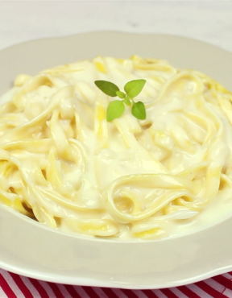

Arroz de Camarão
É uma receita que combina sofisticação e praticidade, ideal para quem busca um jantar leve e sofisticado, mas com aquele sabor caseiro e acolhedor.
Ver

Macarrão ao Molho Branco
Simples, mas sofisticado, esse prato é ideal tanto para um jantar rápido quanto para momentos especiais.
Ver
Lasanha a Bolonhesa
Ideal para um almoço em família ou um jantar especial, esta lasanha agrada a todos os gostos com sua textura equilibrada e sabor irresistível.
Ver
Frango Acebolado
Ideal para acompanhar arroz branco ou uma farofa crocante, esse prato vai impressionar em qualquer ocasião com sua simplicidade e sofisticação.
Ver